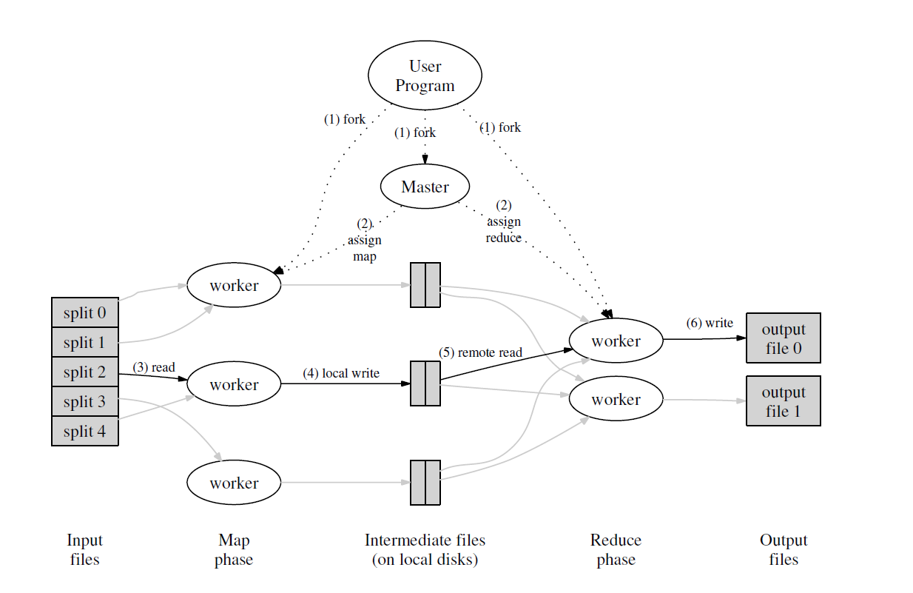

MapReduce是谷歌在2004年发布的一项新技术，该技术旨在解决大数据规模下的日常问题。MapReduce有两部分组成：Map负责将输入的键/值对转换成适合处理的键/值对，而reduce则负责将map产生的键/值对按照要求合并起来。MapReduce隐藏了分布式底层的细节，比如容错性、局部最优化、负载均衡等，使得一个对并行计算一窍不通的人都能很好的利用分布式系统的优势来解决自己的问题。换句话说，MapReduce将分布式计算设置成一个接口，用户可以假设这个接口能提高强大的、正确的、有效的分布式计算能力，用户本身只需要提供自己想要完成的任务即可。MapReduce是数据增长到一定规模的必然产物，类似操作系统一样，对底层分布式的相关细节做一个抽象，将控制和实现分开，大大提升了生产力。
MapReduce解决了什么问题？
当数据规模持续增大时，一些简单的问题就变得十分复杂。比如统计不同字母出现的频次，如果对象是一篇文章，单机就能很好的完成任务；如果对象是今日头条所有的新闻，那用单机来处理的速度和所花费的时间将会令人感到绝望，而MapReduce就是为了解决大规模数据下的常规问题而提出的一种算法。
MapReduce的目的
MapReduce旨在充分利用分布式集群的计算能力，统筹成千上万台服务器并提供强大的计算能力，目标在极短的时间内在几十TB的数据上完成预定操作；并且提供一个易于调用的接口，隐藏内部复杂的实现细节，使得一个对分布式系统一窍不通的人都能利用分布式计算的强大计算力。
MapReduce的基本原理：

MapReduce程序将数据划分到M个计算节点中做映射操作，产生的中间结果存放到该计算节点的本地磁盘里，并将这些中间结果通过划分函数划分为R份，R份对应于R台执行reduce操作的计算节点。当map的计算节点完成任务时，将会通过master通知reduce节点，然后reduce节点会从map节点取走相应的数据，处理完后输出到指定的输出文件。一些典型的划分函数时hash(key)mod R,这么做的好处是，不同map计算节点上产生的相同key值的数据将会被映射到同一台reduce计算节点上处理。具体流程如下：
- 在用户程序中MapReduce库首先会将输入文件划分为相同大小的数据片（数据片的大小可由用户指定，一般为16-64MB),然后将程序复制到集群中的所有计算节点中去。
- 其中一个节点是master节点，其他节点将会被划分为M个执行map操作的计算节点，和R个执行reduce操作的计算节点，master节点操作空闲的节点并分派map或者reduce任务。
- map节点对输入数据执行用户定义好的map操作，将产生的中间结果存放在内存。
- map节点的中间结果将会周期性的存到本次磁盘，在存放时会调用划分函数，将中间结果划分到R个不同区域中。随后，存放这些中间结果的本地磁盘的地址将会被发送到master节点，master节点负责联系相应的reduce节点接收数据。
- 当reduce节点收到master节点的通知后，将会通过远程连接取走map节点上的数据，当reduce节点取完数据后，会对取来的数据进行一次排序，使得key值相同的数据连在一起，便于处理，这么做是因为会有很多个不同key值对应的数据映射到同一个reduce节点上。（划分函数是hash(key)mod R,显然一些key值的数据哈希值相同）
- reduce节点利用用户定义的reduce函数处理接受到的数据，并将结果放到指定输出文件里。一个reduce节点对应GFS上的一个输出文件。
- 当所有的map和reduce操作完成时，master节点会通知用户程序，至此完成一次mapreduce操作。
当mapreduce操作完成时，最后的结果将会存放到R个指定输出文件里，用户可以根据需求合并这R个文件的结果，或者将这R个文件作为下一个mapreduce操作的输入。
一般而言，map节点的数量应该非常大，而reduce节点的数量则相对少很多。
master节点的作用
master节点会记录所有map节点和reduce节点的状态（idle, in-progress or completed)，同时也会记录已经被分配了任务的机器节点方便调配。master节点可以看成是map节点和reduce节点的管道，map节点利用master节点来通知相应的reduce节点来取走相应的数据。
fault tolerance
- 节点失联：如果map节点挂了，那么master节点重新分配这台map节点分配到的map任务。如果reduce节点挂了，那么重新安排一台新的机器来reduce，不需要重新执行这台机器的reduce任务。因为map节点的中间结果是存放到本地的，这意味着map节点挂了，它的任务的执行结果也就拿不到了。但是reduce节点是将结果存放到指定输出文件的，所以reduce节点挂了，它的处理结果还在，因此不需要重新启动reduce任务。
- master失联：一般master不会失联，如果失联了，就返回一个执行失败的提示给用户程序，让用户重新启动一个新的任务。
- 对于有两个map节点领取到同一个map任务的情况：因为是由master节点负责协调map节点和reduce节点，所以只有其中一台map节点的数据是可用的。
- 对于有两个reduce节点领取到同一个任务的情况：reduce节点的输出是直接写到GFS上的，而GFS上的文件命名是跟key值相关且唯一的，所以如果有两台reduce节点领取到同一个任务，那么处理的key值就会相同，而由于GFS文件命名的唯一性，最终只有一个reduce节点的结果会写入到GFS上。
backup tasks
谷歌的大佬发现，有的机器运行久了，或者是其他任务占用同一台机器，使得一个mapreduce任务执行到后期时，运行速度会变慢。所以他们提出了一个办法解决这个问题，就是当mapreduce任务执行到后期时，master会备份还处于执行状态的所有任务，这时候只要原来的执行程序和备份的执行程序任意一个完成执行任务，就宣布本次mapreduce任务完成。谷歌大佬表示，这么做还挺有效的。
提升MapReduce执行速度的小窍门
- partitioning function：常规的划分函数是hash(key)mod R,这样可以使不同map节点相同的key值映射到同一个reduce节点。如果任务有特殊要求，可以改变这个划分函数，使得我们想要reduce的数据划分在同一个reduce节点里。
- combiner function:谷歌大佬发现，网络带宽是个很稀少的资源，所以数据能少传就少传。因此对于一些特殊的任务，可以在map节点结算出中间结果后，现在map节点来reduce一次，再将reduce的结果发给reduce节点。比如统计字母频次的任务，map的结果是(“word”,1)，如果直接发送中间结果，那意味着会发送几百万条(“word”,1)，非常占用带宽，但是如果在map节点就来一次reduce，那么发送给reduce节点的数据就仅仅是一条(“word”,100000)，带宽明显节省了很多。
- ordering guarantees：保证中间的处理结果是升序的。
- Input and output types:定义一个好的输入输出类型噢。
- side-effects:在map/reduce操作中输出一些用户想要的数据保存到临时文件里。
- skipping bad records:用户提供的程序或者是其他什么东西可能会有错，进而阻塞mapreducue的完成，因此可以选择跳过某些完成不了的片段，继续去执行之后的片段。
- local execution:在本地运行分布式程序，方便debug。
- status information:生成一个页面，页面里有map节点数量、reduce节点数量、已完成的任务数量等等信息，方便用户监测任务完成状态以及查错。
- counters:统计完成了的map/reduce任务数量。